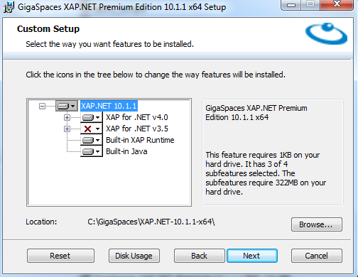
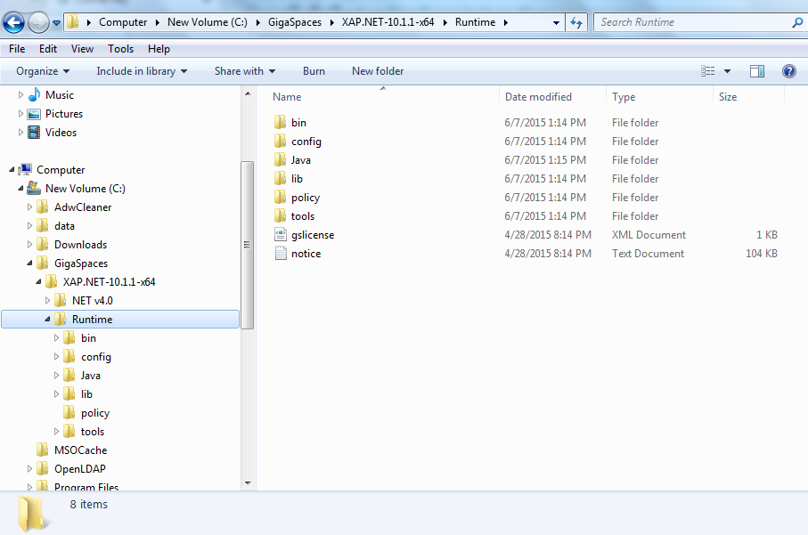

Throughout this tutorial we will create and use a simple internet payment service application to demonstrate the basic
The basic concept of our application;
You can download all examples presented here from github. Feel free to clone, fork and contribute to the tutorial code.
Once you have downloaded the distribution, start the installation by double-clicking the msi file and the installation wizard will appear and guide you through the installation process.

The default product location is C:\GigaSpaces\XAP.NET {Version} {Platform} (For example: C:\[%=Versions.gshome-net-directory%]). This convention supports side-by-side installation of different versions of

The product directory structure as follows:
NET v4.0 – Contains
Gs-ui.exe – Standalone GigaSpaces Management Center.
Runtime – Contains the Java part of the product
In addition, the